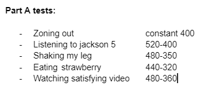
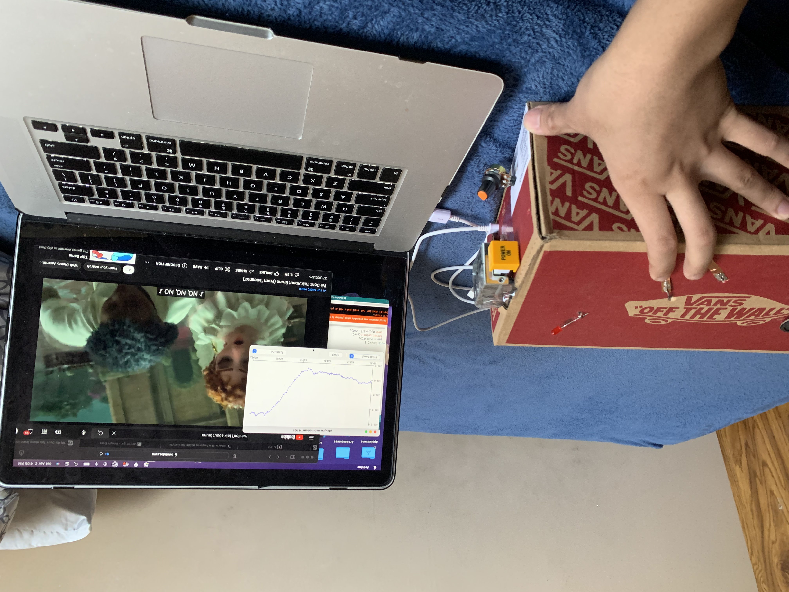
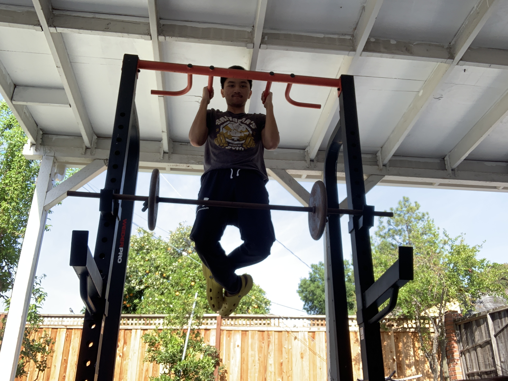
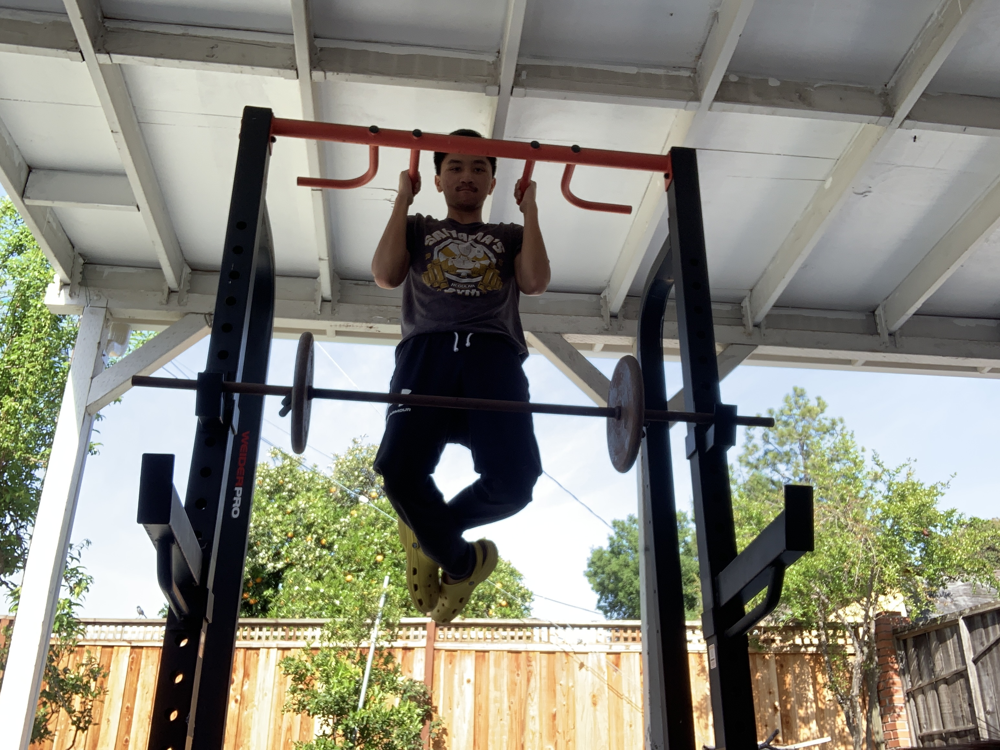

===Phase 1===
Part A: Basic bio feedback
For the basic bio feedback I simply tested out 5 nonstressful activities just to see how the GSR would read and change based on a simple activity. My graph had a consistant fluctuating wave with a peak and trough. The two numbers represent the min and max readings of each activity.
Part B: Expirement with 3 different activities
My experiments were mostly tests that would effect my heart rate and excitement. The workout went as much as I predicted as it rose exponentially. The berry test was different than the first in that I added Tajin, a chilli spice, to enhance the flavor and see what affects it had and behold the GSR reading rose by 90. Lastly the encanto sing-along suprised me the most as I noticed a spike during one of my favorite parts of the song. This lead me to expirement more with music for the later phase.

 

===Phase 2===
Neopixel
Example of my neopixel working as the LED changes color from blue to purple to red. The video title is "Rush E".
===Phase 3===
Processing & Serial
Videos showing the graph code working with processing and the dimmer code working with aurduino.
===Phase 4===
Proof of Concept
For my proof of concept I explored the topic of music and how my excitement levels recorded from the GSR would read based on different music genres. I have 3 experiments: one focused on the LED, one focused primarily on the graph, and one based on my Elvis observation.
For my my first video I explored the GSR using the LED. The LED would start from blue to purple to red based on my excitement level. Also the dimmer the color is the less excited I was and the brighter, the more excited I was. I chose different types of music genres to see if the artist melody, or genre would affect the output and they did.
My second experement with the graph was a bit more music and video based as the videos I was watching felt like it affected my excitement levels. The two main ones were the first video that changed levels based on anticipation and Tyler the Creator's dance affected the other one. Maroon 5's Sunday Morning was probably the most intriguing one because it is my favorite song. I expectted my excitement level to peak, but instead it went the opposite. This is because I feel like the song calmed me more than exciting me. It took away the stress I had and the GSR was able to read that.
This is my Elvis experiment where I noticed the GSR would read differently based on different versions of Elvis Presley's Burning Love. My first observation was from his much older live performance of the song. This fueled my curiosity as I knew I liked the song a lot more than the GSR would show. The second version was from my favorite childhood movie "Lilo & Stitch" where they did a cover of the song. This was my first introduction to the song and I wondered if the sense of nostalgia would affect the GSR reading. It did rising a bit higher than the previous song. Lastly I tried the original recording from Elvis as this was the highest quality version and most known version of the song. The GSR read this as the highest which was what I expected to get from the 1st vrsion I listened to. In conclusion, all though it may be the same song, the GSR can read differently based on the different version of music.